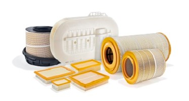
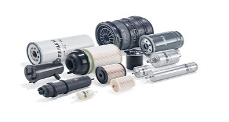

Venta y Distribución de Repuestos y Autopartes de Motor para Motores Diesel y Nafteros - Venta de Partes de Motor de las Principales Marcas Nacionales e Importadas - Repuestos para motores Ford Fiat Peugeot Renault Chevrolet Volkswagen Citroen Audi Alfa Romeo Mercedes Benz - Partes de Motor para Automóviles Utilitarios - Camionetas 4x4 Camiones Línea Pesada Todo tipo de Motores Nafta o Gasolero.
con las siguientes marcas:
Mahle
Scania
Sach
Mercedes Benz
Entre otras
filtros
La función de los filtros es proteger los motores y otras maquinarias contra el polvo y la suciedad, que penetran en el equipo mecánico mezclados con el aceite, aire, combustible y aceite hidráulico
filtros de aire
El filtro de aire retiene las impurezas aspiradas por el motor. Asegura que el aire que llega a la cámara de combustión sea lo más limpio posible, evitando así el desgaste prematuro de componentes como pistones, bielas, cojinetes, cojinetes y cigüeñales.

filtros de combustible
Un filtro de combustible de calidad garantiza el suministro de combustible limpio y homogéneo, ¡libre de contaminación! Evita problemas en el sistema de inyección como: atasco de la boquilla o atasco de la bomba de combustible.

filtros de aceite
El aceite de motor limpio reduce la fricción, enfría las piezas del motor, protege contra la corrosión y sella la cámara de combustión. Los filtros de aceite MAHLE protegen de forma fiable las partículas de suciedad.